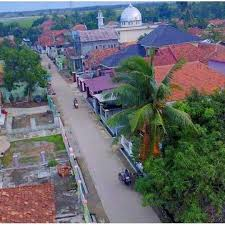

Kecamatan Patokbeusi memiliki beberapa desa yang menjadi pusat kegiatan masyarakat dalam bidang pemerintahan, pendidikan, pertanian, dan perdagangan.
Setiap desa memiliki potensi dan karakteristik yang berbeda-beda sehingga memberikan kontribusi penting terhadap perkembangan wilayah Kecamatan Patokbeusi.
Pemerintah kecamatan terus berupaya meningkatkan pelayanan publik dan pembangunan infrastruktur di seluruh desa agar masyarakat dapat hidup lebih nyaman dan sejahtera.
Berikut merupakan beberapa desa yang berada di wilayah Kecamatan Patokbeusi Kabupaten Subang.
| No | Nama Desa |
|---|---|
| 1 | Desa tanjungrasa kaler |
| 2 | Desa gempol sari |
| 3 | Desa tanjungrasa kidul |
| 4 | Desa Tambakjati |
| 5 | Desa Ciberes |
| 6 | Desa Rancamulya |
| 7 | Desa Rancajaya |
| 8 | Desa Rancabango |
| 9 | Desa jatiragas hilir |
| 10 | Rancaasih |
Dengan adanya kerja sama antara pemerintah desa dan masyarakat, diharapkan seluruh desa di Kecamatan Patokbeusi dapat terus berkembang menjadi wilayah yang maju dan mandiri.